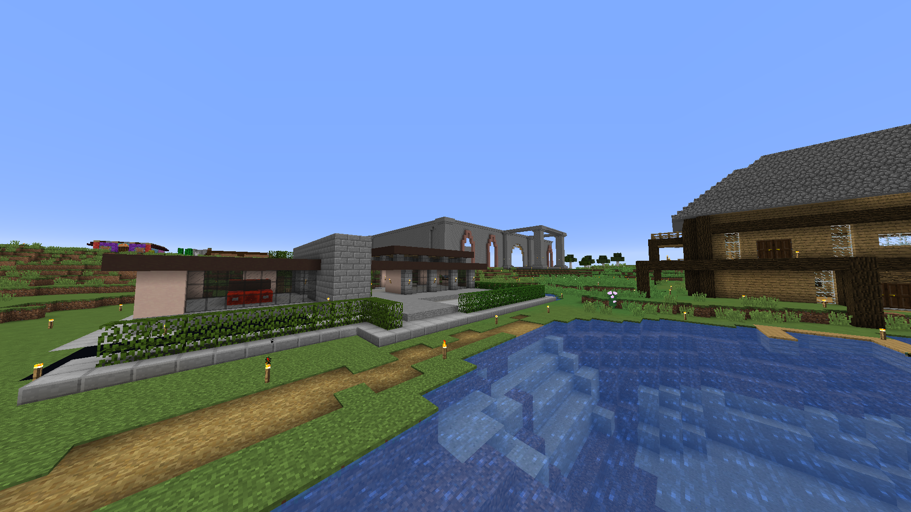

Felix

Felix var serverns andra medlem. Jacob hade startat en egen Minecraftvärld för att sysselsätta sig under hans fyra timmar långa torsdagshåltimma. Eftersom Felix hade ett Minecraftkonto sen tidigare kunde han joina världen. Eftersom Manfred, Jacob och Felix hade hål samtidigt lyckades Manfred fixa crackat Minecraft så han också kunde vara med.Felix hus och bank i bakgrunden
Felix första hus var ett klassiskt trähus, men Felix gillade inte hur det såg ut. Han rev därför det huset och byggde istället ett mycket snyggare hus med modern stil och stora fönster.
Han senaste projekt var hans jättestora bank. En rektangulär stenbyggnad över hundra block lång. Bygget är för tillfället inte färdigt.